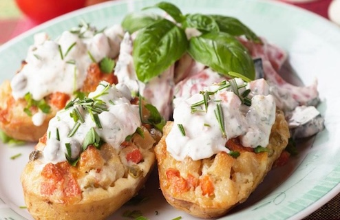
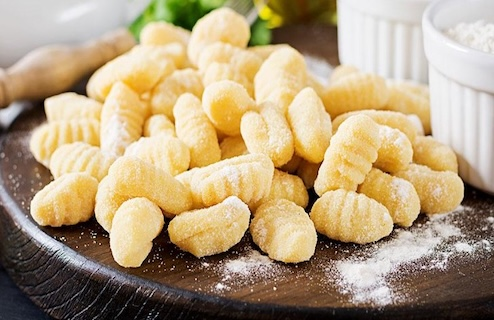
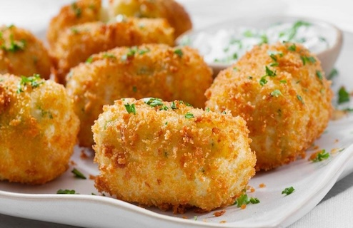
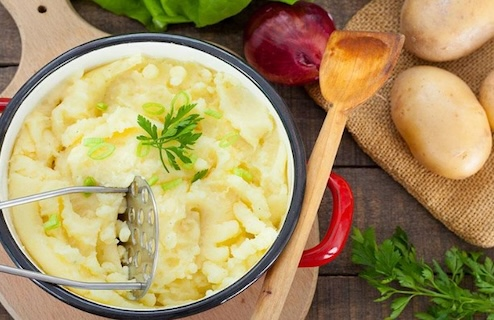

Nuestras recetas
Papas rellenas

Ingredientes
- 4 papas
- Queso para rellenar
- Sal y condimentos a gusto
Preparación
- Herví las papas hasta que estén tiernas y dejalas enfriar un poco.
- Cortalas a la mitad, ahuecalas y mezclá el interior con el queso y los condimentos.
- Rellenalas y llevalas al horno hasta que el queso se gratine.
Ñoquis de papa

Ingredientes
- 4 papas
- 1 huevo
- Harina y sal
Preparación
- Herví las papas y pisalas para hacer un puré.
- Agregá el huevo, la sal y harina de a poco hasta formar una masa.
- Formá los ñoquis y hervilos hasta que suban a la superficie.
Croquetas de papa

Ingredientes
- 3 papas
- 1 lata de atún
- 1 huevo y sal
Preparación
- Herví las papas y prepará un puré.
- Mezclalo con el atún, el huevo y la sal; después formá las croquetas.
- Cocinalas en una sartén hasta que estén doradas de ambos lados.
Puré de papas

Ingredientes
- 4 papas
- Un poco de leche
- Manteca y sal
Preparación
- Pelá y herví las papas hasta que estén tiernas.
- Pisalas y mezclalas con la leche, la manteca y la sal.
- Revolvé hasta obtener un puré cremoso.